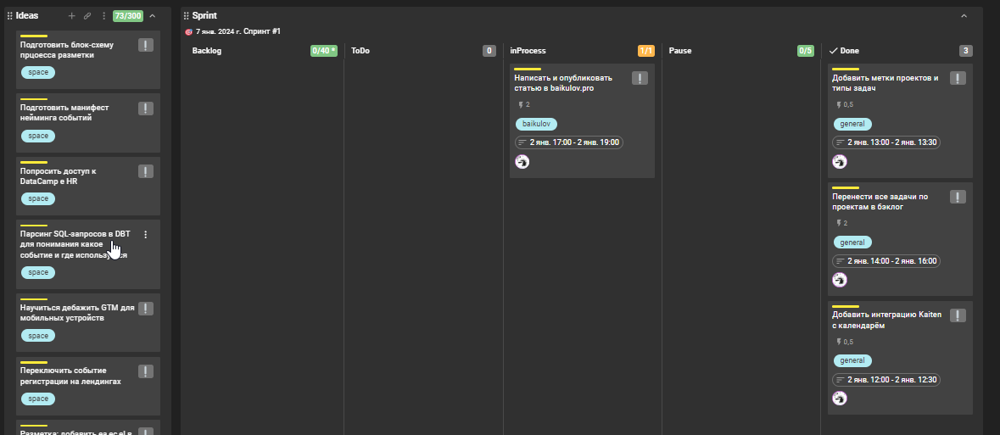
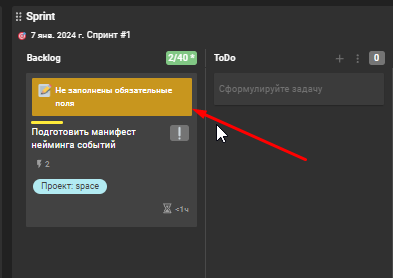
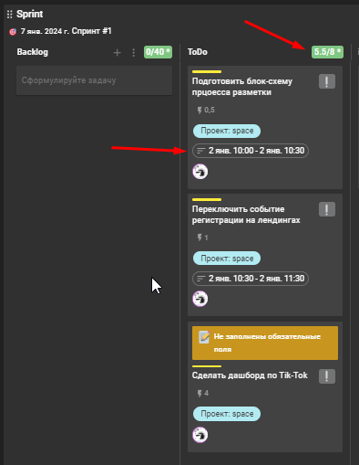
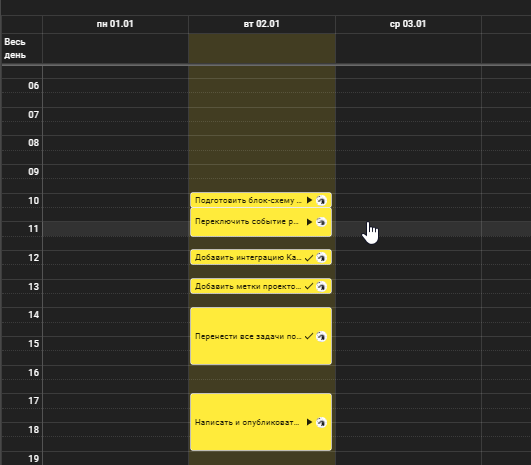
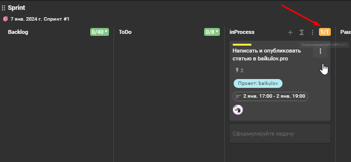

Использование спринтов в Kaiten¶
 Kaiten - относительно новый инструмент для управления задачами. Я использую его около 3-х лет и за это время сформировались определённые наработки, которыми я хочу поделиться.
Используем модули канбан и Scrum¶
Сразу хочу предупредить - я не разбираюсь даже в основах этих терминов и просто использую модули встроенные в Kaiten.
В моём понимании Kanban - это определённые этапы, которые проходит задача, трансформируясь от идеи в конкретную выполненную задачу или задачи. Эти этапы представлены в виде доски с колонками, по которым мы перемещаем карточки(задачи).
Этапы я назвали так:
- Ideas
- Backlog
- Todo
- inProcess
- Pause
- Done
Ideas¶
Сюда попадают идеи. Идея может возникнуть спонтанно в процессе работы или прилететь со стороны в виде конкретной задачи. В любом случае первоначально она попадает в колонку Ideas и ждёт пока её обработают и добавят в Backlog в виде задачи. Никаких требований к записи идей нет. Формат произвольный
Ideas>>Backlog¶
В начале каждого спринта происходит процесс в результате которого идеи превращаются в задачи. Каждая идея раскладывается на задачи. Название происходит по формуле: Action+Context. Например, Добавить тесты в модель bi_report__metrics или Подготовить документацию по процессу "Добавление отчёта в PowerBI".
Затем каждая задача оценивается по размеру. Это необходимо, чтобы сравнить впоследствии время планируемое и реально потраченное на задачу. Такой подход со временем вырабатывает навык более точной оценки сроков. Плюс данный показатель можно использовать как метрику KPI. Размеры задач можно использовать любые, я использую числовые:
- 0.5 - Полчаса
- 1 - Час
- 2 - Два часа
- 4 - Четыре часа
- 8 - Восемь часов
Задачи длительностью более 8 часов декомпозируются. Основные требования к колонке Backlog после заполнения:
- Общий размер задач в ней не может превышать 40 часов
- У каждой задачи указан проект, размер и описание
Если у задачи не будут указаны обязательные поля, то у такой задачи появляется специальная надпись.

Backlog >> ToDo¶
Каждое утро в начале рабочего дня из Backlog в колонку ToDo перемещаются задачи. До тех пор пока общий размер колонки не составит 8 рабочих часов.

Затем в каждой задаче указывается период, когда задача будет выполняться. В результате мы получаем распланированный рабочий день.

ToDo >> inProcess¶
Здесь всё просто. Когда наступает время выполнения задачи, мы перетаскиваем её в inProcess колонку. Когда пользователь перетаскивает задачу он автоматически становится её исполнителем. Здесь также есть ограничение. Мы не можем иметь в этой колонке больше одной задачи на исполнителя. такой подход позволяет сконцентрироваться на выполнении только одной задачи.

Здесь всё просто. Когда наступает время выполнения задачи, мы перетаскиваем её в inProcess колонку. Когда пользователь перетаскивает задачу он автоматически становится её исполнителем. Здесь также есть ограничение. Мы не можем иметь в этой колонке больше одной задачи на исполнителя. такой подход позволяет сконцентрироваться на выполнении только одной задачи.
inProcess >> Pause | Done¶
В процессе выполнения задача может быть поставлена на паузу. В этом случае она перемещается в колонку Pause. В паузу можно перевести не более 5 задач. Если задача пробудет в паузе больше 1 дня появится уведомление.
А если задача выполнена, то она перемещается в Done.
Summary¶
Перечисленные выше этапы и процессы могут быть реализованы в любой системе. Но лично мне нравится Kaiten, потому что он позволяет не только гибко подходить к настройке процесса, но и также собирает статистику, которую потом можно использовать для анализа показателей эффективности.